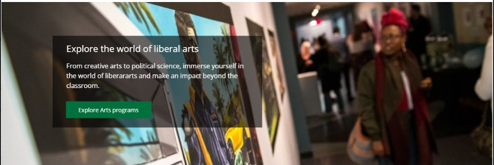
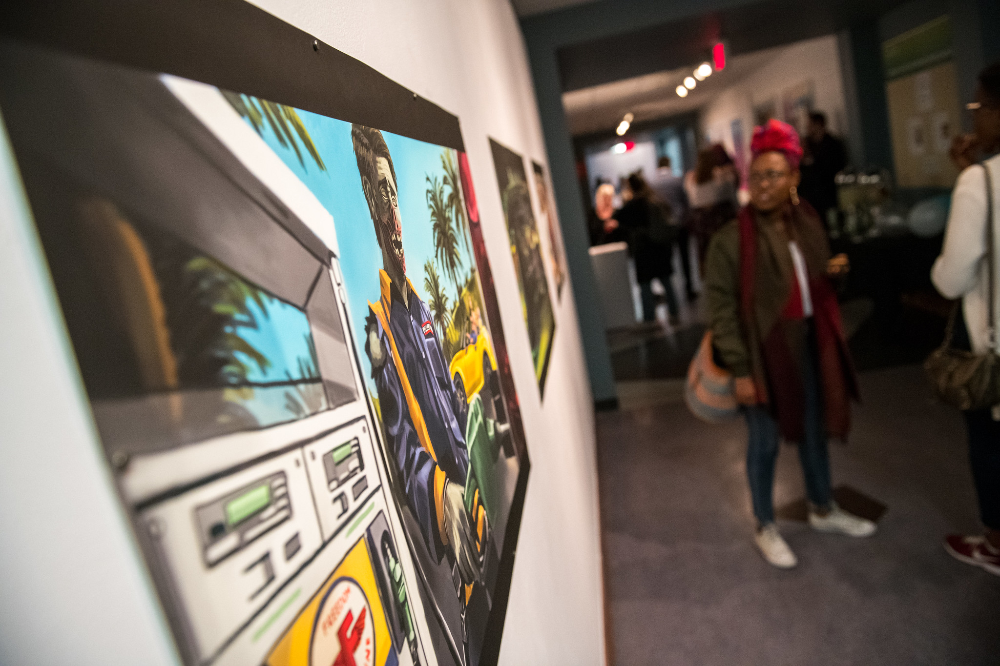

COA Content Type Development
https://drive.google.com/file/d/1mcOu70qa-dg-E6cA9OPRG4z9cbHOQvKJ/view
Wrike Project
https://www.wrike.com/workspace.htm?acc=3950324#/task-view?id=758114589&pid=608002304&cid=555855785
Expandable text element
https://www.wrike.com/workspace.htm?acc=3950324#/task-view?id=758127575&cid=555855785&pid=608002304
TODO: Working URL?
An updated version of the Student FAQ content type, but doesn’t need the category/domestic/etc piece at all
(https://myweb.ufv.ca/terminalfour/SiteManager?ctfn=template&fnno=10&tid=277&gid=55 )
- Non-expanded should be font-awesome icon ‘fal f13a’ in our dark green outline
- Expanded should be font-awesome solid icon ' fas f13a' with dark green
- Content type should have option to be full-width or half-width
- Fields:
- Header (question)
- Answer (html content)
- light grey line at bottom of answer


2. Content box with background image, text box, green CTA button
Can we create one content type that will go edge-to-edge on the full-width layout and then full column width on a typical inner-page layout?
Needs:
- uploadable background image
- Text box (LH placement - we may need to play with width)
translucent background
- header field (white text)
- teaser field (white text)
- dark green CTA button link field
On mobile:
- Layout should shift so image is full-width at top
- Text box drops below image, goes to 100% width
- What should background color or text box be on mobile?? Dark grey??

